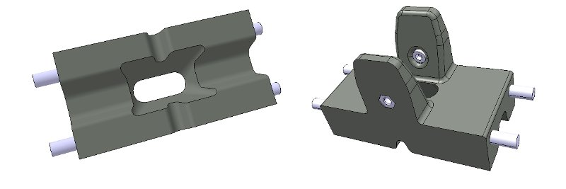
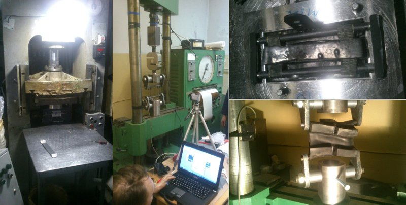
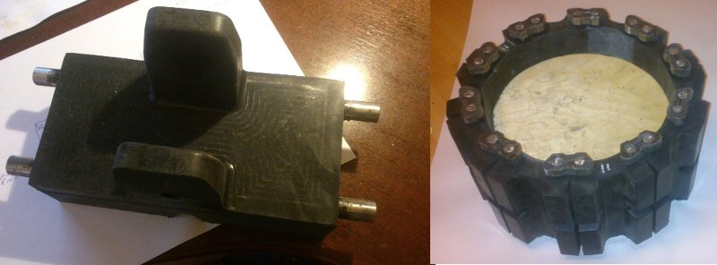
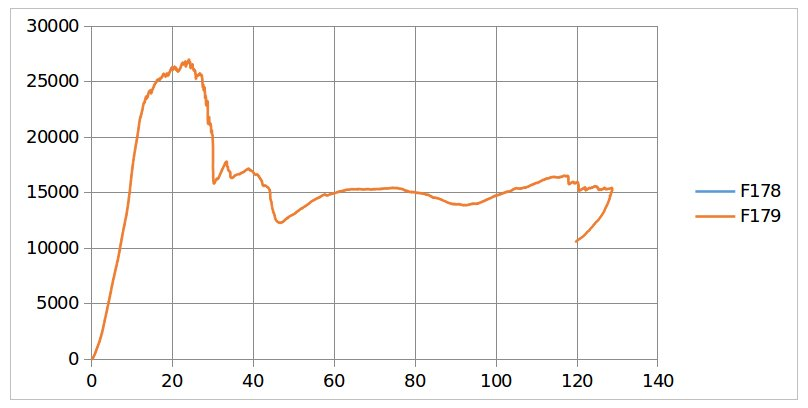
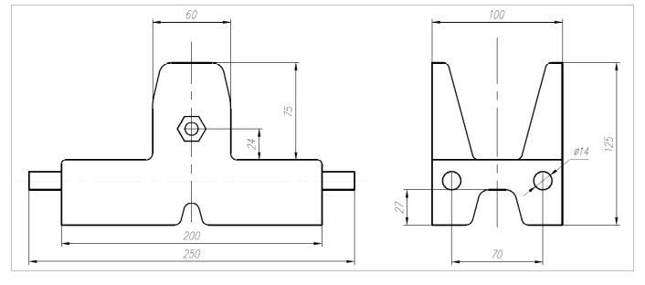

ГИБКИЙ РЕЗИНОВЫЙ ТРАК ГУСЕНИЧНОЙ ЦЕПИ ДЛЯ СВЕРХ ЛЕГКИХ ВЕЗДЕХОДОВ
Многие гусеничные вездеходы с полной массой от 4 тонн, оснащаются гусеницами, которые унифицированы с ранее выпускаемой техникой (ГАЗ-71, МТЛБ и др.). Это обеспечивает преимущества, такие как: взаимозаменяемость, доступность запчастей; отсутствие собственных затрат на конструирование и производство гусеницы; положительный опыт эксплуатации знакомой техники и т.п. Легкие гусеничные машины до 3 тонн, оснащаются, как правило, ленточными гусеницами, т.к. только они доступны на рынке или допускают относительно простое самостоятельное изготовление. Причем звенчатых (состоящих из траков) гусениц для легких гусеничных машин в серийном производстве просто нет.
Стремление применить готовые гусеницы, учитывая их скудный ассортимент, или попытки изготовить собственные, с минимальными требованиями к технологичности производства, приводят к неэффективным конструкциям ходовой системы, несоответствию их условиям эксплуатации, низкой надежности. Так, например, ленточные гусеницы допускаю эксплуатацию только на мягких грунтах и снежных основаниях; при локальном повреждении ленточной гусеницы замене подлежит вся гусеница целиком; ленточные гусеницы имеют малую продольную и пропеллерную жесткости, что усложняет ее натяжку, установку, удержание от спадания.
Таким, образом, многие гусеничные машины проектируются методом приспособления и адаптации имеющихся гусениц и узлов ходовой системы, что противоречит основному принципу конструирования гусеничных машин «от грунта - вверх». Сущность этого принципа «от грунта - вверх» состоит в том, что вся конструкция вездехода, его геометрические и физико-механические параметры должны выбираться и приниматься исходя из свойств опорного основания (грунта).
Причины отхода от этого принципа кроятся в отсутствии должного уровня научной и производственной базы. Как известно, трак гусеничной цепи требует применения сразу нескольких технологий: литье, термическая обработка, механическая обработка, обрезинивание. А подведение научной базы под выбор рациональной конструкции трака и его параметров требует рассмотрения сложных математических моделей, построенных на аппарате механики сплошной среды, проведения экспериментов с применением современных средств измерения.
Научный потенциал, производственная база, имеющиеся в распоряжении, а также обычный энтузиазм позволили реализовать проект №1 по созданию оригинального трака гусеничной цепи для сверх легких гусеничных машин. Конструкция трака не является традиционной и защищена патентами на полезную модель. Основная конструктивная особенность заключается в том, что трак изгибается по середине (в теле), а соединение траков между собой является жестким, что обеспечивает, отсутствие открытых трущихся поверхностей. Твердотельная 3D-модель трака показана на рис.1. Трак имеет гибкий несущий каркас, который заполнен специальной резиновой смесью, высокостойкой к истиранию, относящейся к группе силовых резин, с армирующим наполнителем и рабочим диапазоном температур от +200 до -60 0С. Полностью резиновый трак исключает склонность к обледенению и придает свойство самоочищаемости от грязи. Протектор трака обеспечивает высокий коэффициент сцепления, а также низкую повреждаемость почвы (травяного слоя).

Рис.1. 3D-модель трака
По твердотельной 3D-модели трака проектировалась стальная форма для вулканизации резиновой смеси под давлением с определенной температурой (рис.2). Изготовленные опытные образцы траков (рис.3) многократно испытывались на разрывной машине, с использованием современной высокоскоростной камеры и регистрирующей аппаратуры. По результатам испытаний строились нагрузочные диаграммы, пример которой приведен на рис.4.

Рис.2. Обрезинивание трака и испытания на разрывной машине

Рис.3. Опытные образцы гибких траков
Анализ нагрузочных диаграмм, полученных на разрывной машине, позволил выбрать материал каркаса, а также оптимальные его размеры. Наилучшие показатели относятся к стальному гибкому армированию и кевларовому волокну. Как видно из графика (рис.4), существует линейная зона деформации трака; при достижении разрывного усилия 3 тонны каркас трака, выполненный из текстильного волокна, разрушается. Деформация при разрушении трака составляет приблизительно 15 мм.

Рис.4. Нагрузочная диаграмма трака: зависимость разрывного усилия от деформации
Созданная гусеница на основе обрезиненных траков со стальным гибким каркасом успешно прошла эксплуатационные испытания и применяется на малых и сверхмалых гусеничных машинах и спецшасси. Созданный трак является базовым элементом в типоразмерном ряду гусениц для сверхлегких вездеходов: на его основе допускается создание модификаций под конкретные требования заказчика и условия работы трака. Так, например, изменению подвергаются следующие параметры: уширяется трак (ширина 200-300мм), увеличивается шаг, выполняется более развитый протектор, используются разные составы резиновых смесей, в том числе и с армированием волокнами и т.п.
Геометрические параметры базового трака показаны на рис.5. Основные физико-механические параметры трака приведены в таблице.

Рис.5. Геометрические размеры эластичного трака
Параметры трака
|
№ |
Наименование параметра |
Величина/характеристика |
|---|---|---|
|
Максимальное тяговое усилие, Н |
30000 (3000кГ) |
|
|
Номинальное тяговое усилие, Н |
6000 (600кГ) |
|
|
Максимальный угол изгиба, град |
40 |
|
|
Ширина трака активная, мм |
200 |
|
|
Габаритная ширина трака, мм |
250 |
|
|
Высота протектора, мм |
25 |
|
|
Материал трака (наполнение)_ |
Смесь резиновая |
|
|
Каркас трака |
Гибкий стальной |
|
|
Пробег гусеницы, км |
4000 |
|
|
Тип зацепления звездочки |
Цевочное, многошаговое |
Материалы для скачивания
Каталог навесного оборудования
Прайс-лист
Дополнительные опции
Скачать каталог >>